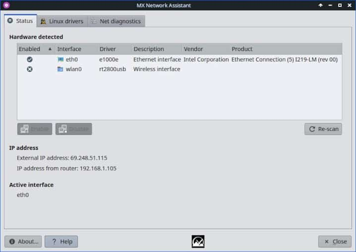

HELP: MX Network Assistant
General
Status tab
This tab shows the results of scanning the network hardware on your system. You will use that information to determine which driver(s) you need using the Linux Wireless site.

Linux drivers tab
Here you can see the linux drivers that are loaded, as well as the ones that are blacklisted.
- Highlight a driver, and use the buttons to change its state as needed.
- If the driver doesn’t work well and/or you prefer to use another driver, a Windows driver for example, you’ll need to blacklist the driver currently being used to stop it from loading at boot time. Select the driver you want to blacklist and press “Blacklist Driver” button to blacklist it. At the next reboot the driver will not be loaded automatically anymore.
- If you want to use a driver that is listed here, but is not loaded automatically at the boot time you might need to install it, select the driver and press “Install Driver” to install it.
Windows drivers tab

- If any Windows drivers are pre-loaded on your system, they will show up here. Highlight a driver, and use the buttons to change its state as needed.
- In order to use Windows drivers you need NDISwrapper. If it is not already installed, please press the Install NDISwrapper button.
- NDISwrapper is an open source software driver “wrapper” that enables Linux to use the Microsoft Windows drivers for wireless network devices. In general, Windows-XP drivers work much better than other versions. Make sure there is no competing Linux driver.
Net diagnostics tab
On this final tab you can test the network, by using Ping to determine connection speed to a specific target, and Traceroute to examine where any problems might lie. To get an idea how it works, put any common URL (google.com, yahoo.com, etc.) in the Target URL box and click Start.
- Ping is used to send small icmp packets to another network host by name or web address as a basic test for connectivity. If you can ping by IP but not hostname, it usually indicates a problem with your name resolution. For details, consult the man page.
- Traceroute is a program that shows you the route over the network between two systems, listing all the intermediate routers a connection must pass through to get to its destination. It can help you determine why your connections to a given server might be poor, and can often help you figure out where exactly the problem is. It also shows you how systems are connected to each other, letting you see how your ISP connects to the Internet as well as how the target system is connected. More on the use of this utility available here.
- MX Linux also includes by default an application called mtr that combines traceroute and ping and presents the output in a very readable GUI. Details on the use of this utility (along with traceroute) here.
Development history: Marco (Mepis), Adrian
License: here.
v. 20170814